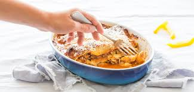

lasange
Ingrediënten:
- 2 uien
- 1 teen knoflook
- 250 g half-om-halfgehakt
- 400 g gepelde tomaten in blik
- 25 g margarine
- 2 el tarwebloem
- 500 ml halfvolle melk
- 250 g lasagnebladen
- 100 g geraspte belegen kaas
- Verwarm de oven voor op 180 ºC. Snijd de ui en knoflook fijn. Bak het gehakt in een antiaanbakpan.
Voeg de ui en knoflook toe en bak 5 min. mee. Voeg de tomaten toe, maak ze fijn en roer alles goed door.
Breng op smaak met peper en zout.
- Verwarm de margarine in een pan en strooi de bloem erbij. Voeg daarna scheut voor scheut de melk toe en
blijf roeren zodat er een saus ontstaat.
- Vet de ovenschaal in. Giet een kleine laag saus in de ovenschaal. Leg daarop afwisselend de lasagnebladen,
gehaktmengsel en saus. Herhaal dit tot alles bijna op is. Eindig met een laag saus. Strooi de kaas erover
en bak de lasagne in de oven in ca. 35 min. gaar.
